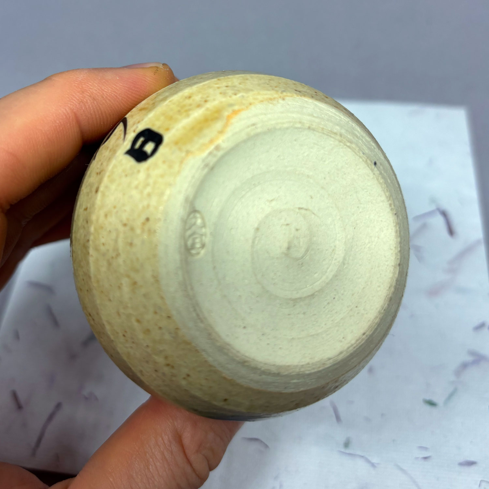
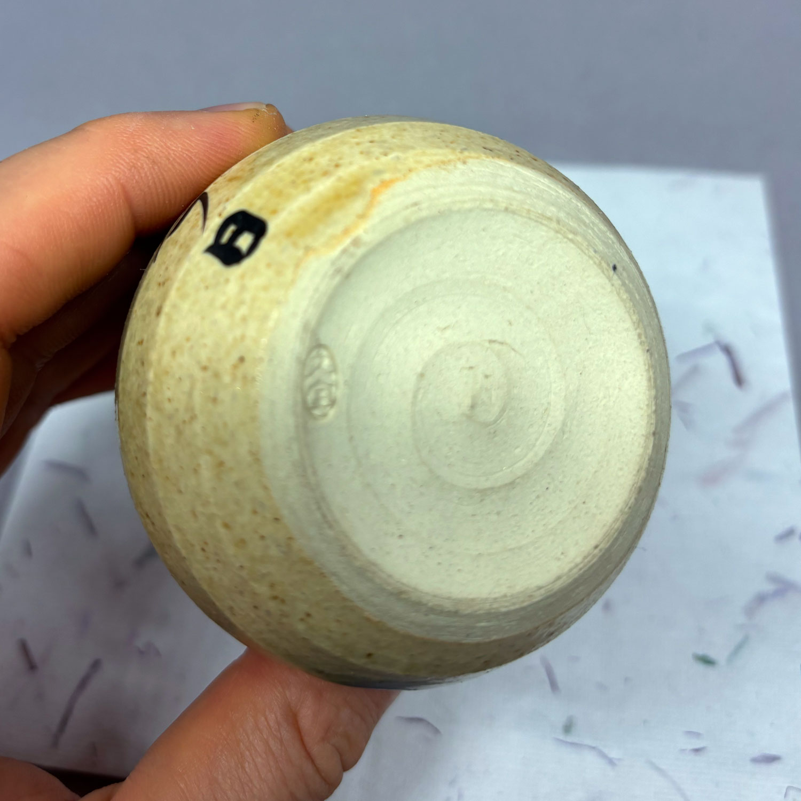
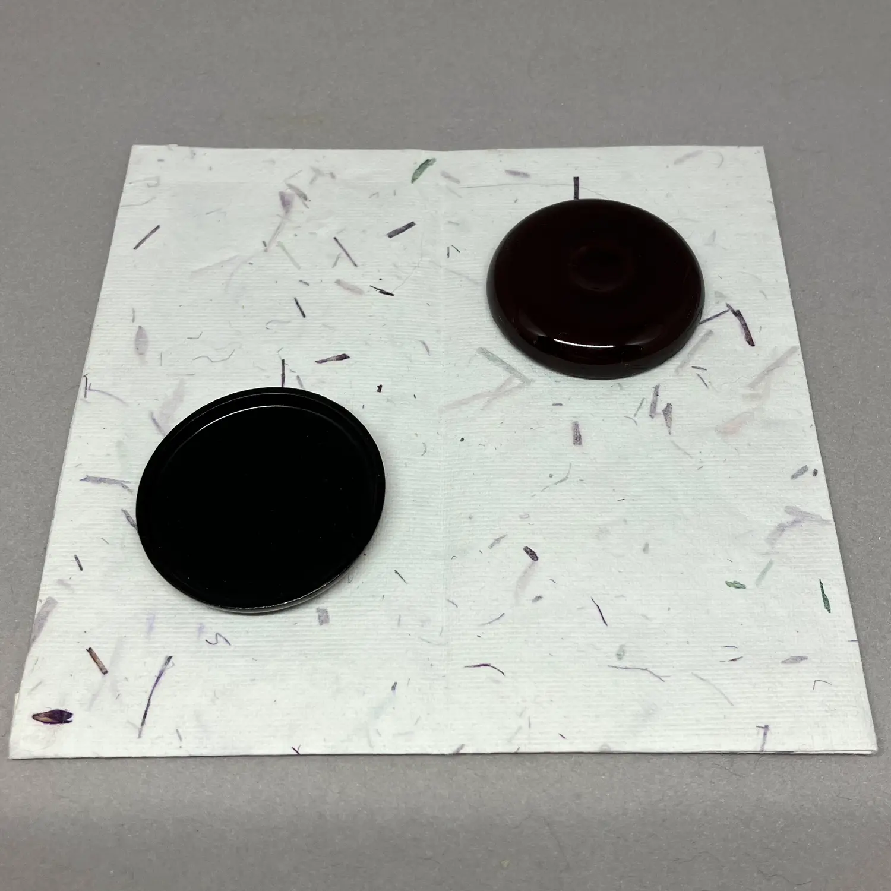
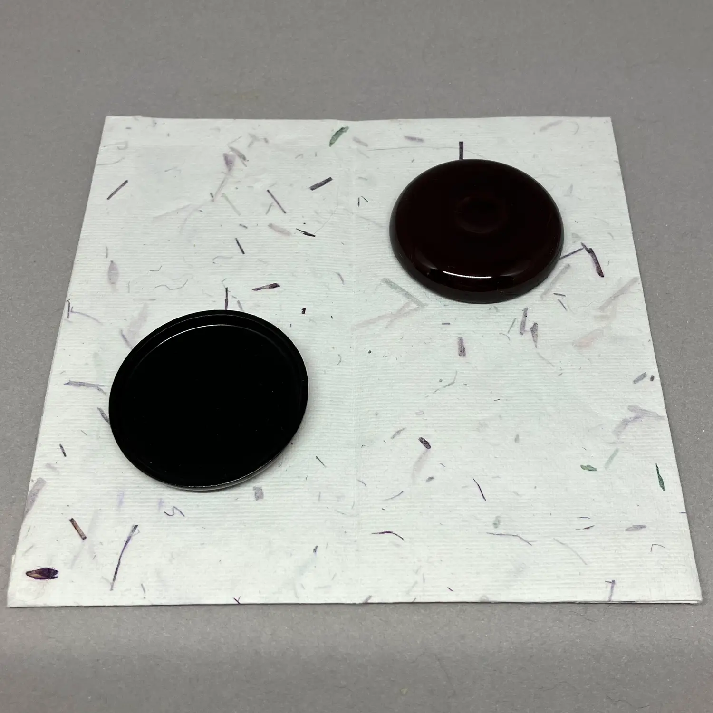
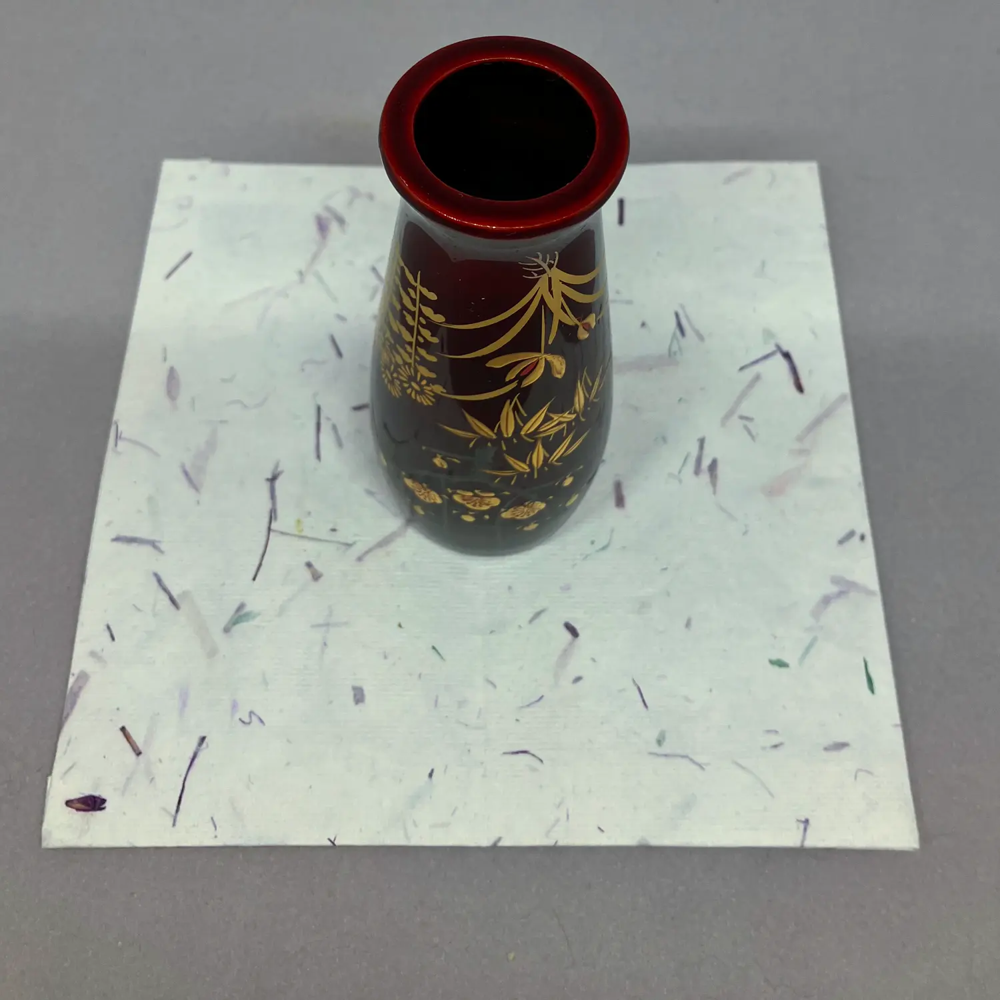
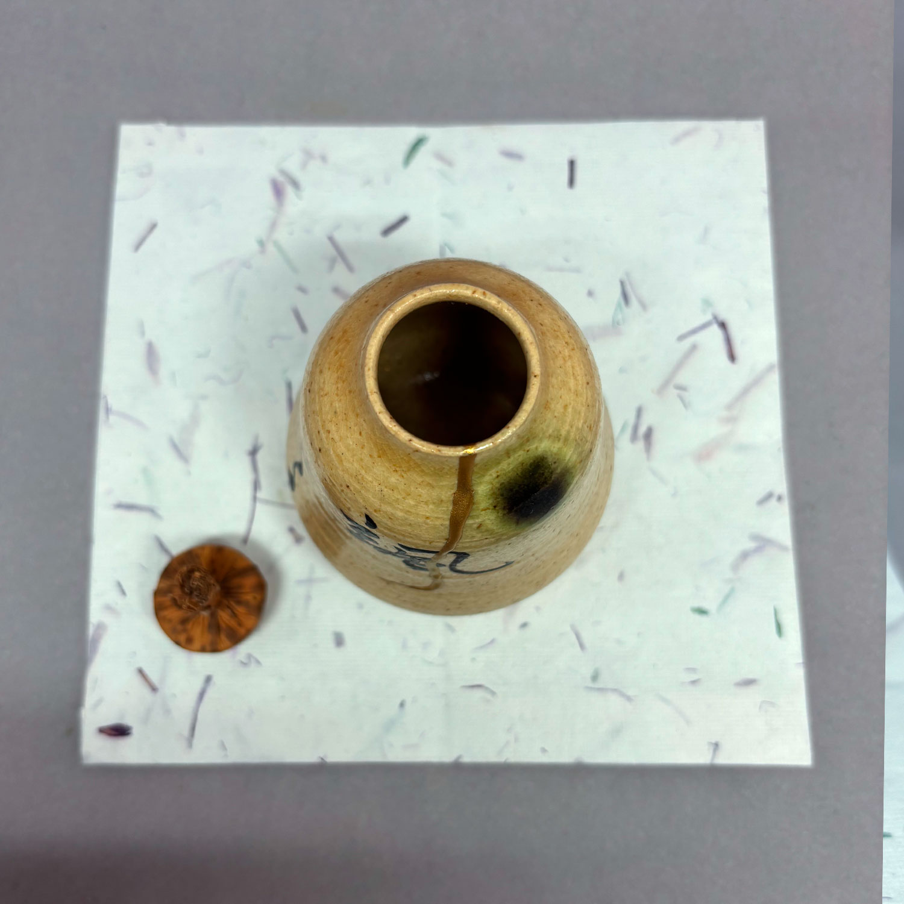
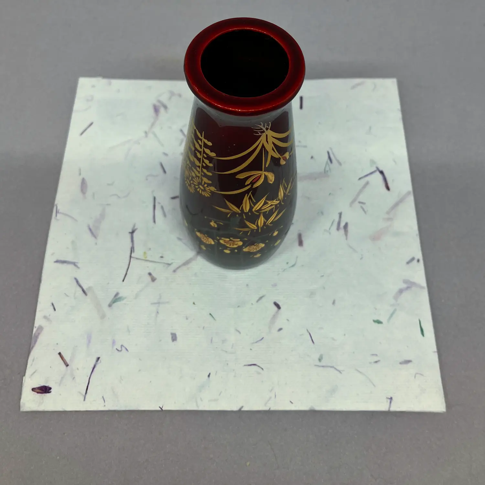
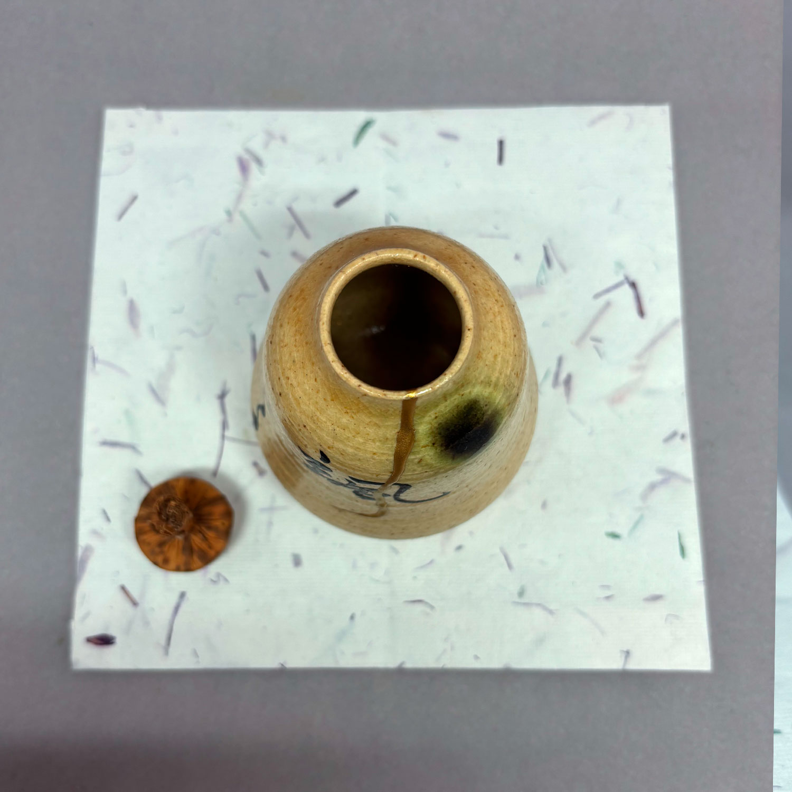
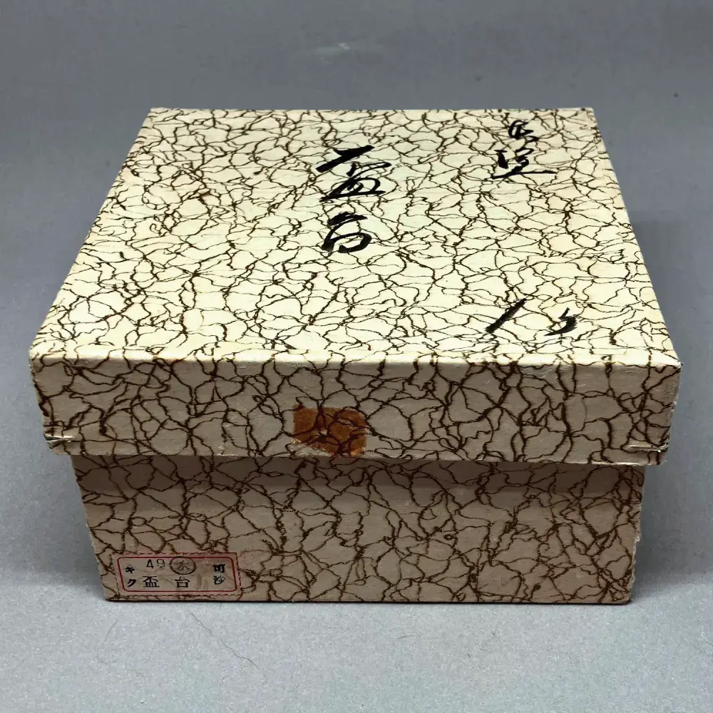
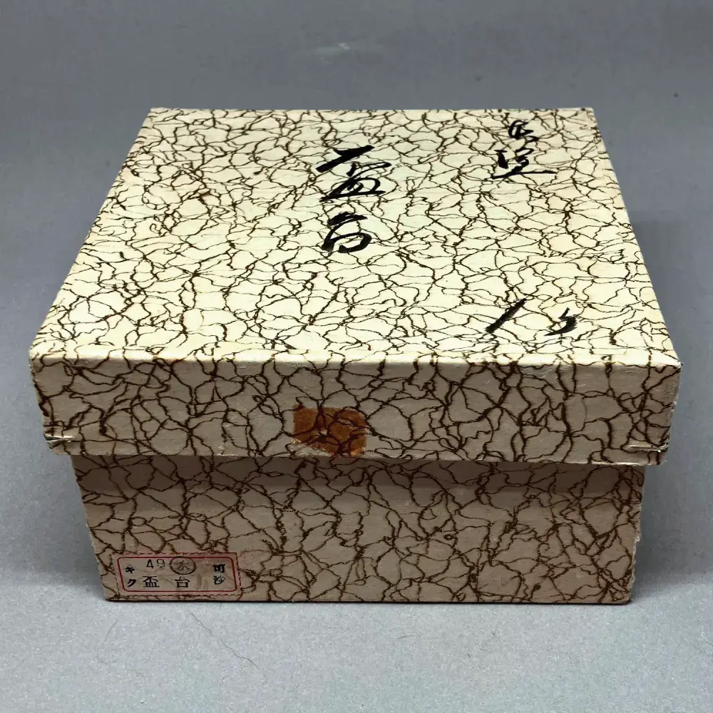

私が持っているほとんどの茶道具は、日本への旅行中に寺院のフリーマーケットで中古で購入しました。私は購入したすべての道具が好きですが、残念ながら私のアパートにはお茶を置くための限られたスペースしかありません。そのため、捨てたくないが保管もできない道具をここにリストアップしています。各道具に価格が付いているのは、これが商業的な取り組みであるためではなく、無料で提供されるものは受取人にとっても価値がないと感じられることが多いという経験からです。この考えを念頭に置いて、各道具に象徴的な価格を付けました。
蓋置 二双（夏・冬）


蓋置 二双（夏・冬）
山口大痴作茶道では、蓋置き（ふたおき）はやかんの蓋や竹製の柄杓（ひしゃく）を置くために必要な道具です。竹製のふたおきが最も伝統的な形式です。伝統的には、新鮮な若竹が使用され、集まりの直前に切り取られて準備されます。新鮮な竹が手に入らない場合は、道具に格式と正統性を加えるために、花押（かおう、様式化された署名）を持つ竹製ふたおきを使用するのが慣例です。
このセットには、冬用（丈夫な）と夏用（軽い）の蓋置きが含まれており、季節に適した雰囲気を演出します。
箱の蓋には、紫野 大徳寺 (Murasakino Daitokuji) という銘が記されており、京都の有名な大徳寺の興臨院住（こうりんいん）の僧、山口大痴（やまぐち だいち）を指しています。大徳寺は臨済宗の本山であり、茶道文化と深く関連しています。
👾：このテキストは機械翻訳されました。不一致がある場合は、英語のページを参照してください。
掲載されている価格は、上記の道具のみを含んでいます。写真に写っている他の道具はサイズ比較や説明のためのものです。
購入 (価格： 120 スイスフラン) 閉じる
湯桶


湯桶
この容器は、湯桶（ゆとう）と呼ばれ、取っ手と注ぎ口が付いたシンプルなふた付き容器で、通常は漆塗りで、懐石料理で重要な役割を果たします。
食事の最後に、主人が全ての米が食べられたことを示します。鍋の底に残ったやや焦げた米は、熱い水で緩められ、湯漬け（ゆづけ）または湯炊き（ゆだき）として知られる軽い出汁が作られます。これは湯桶から注がれ、残りのお米と一緒に提供されます。
この最後の非常にシンプルな料理には、いくつかの意味があります：
- それは食事を完成させます。
- それは、一粒一粒の米に対する敬意を示します。
- そして、懐石におけるシンプルさの美学を表し、基本的な栄養に対する感謝のしるしです。
ゲストはこの出汁を飲むだけでなく、懐石の食事中に使用したお椀を洗うためにも使用し、主人に敬意を表します。湯桶自体は通常、漆塗りの圧縮木製です。
👾：このテキストは機械翻訳されました。不一致がある場合は、英語のページを参照してください。
掲載されている価格は、上記の道具のみを含んでいます。写真に写っている他の道具はサイズ比較や説明のためのものです。
購入 (価格： 60 スイスフラン) 閉じる六方式灰匙


六方式灰匙
銅製の灰匙（haisaji、灰すくい）6本セット。これらの専用道具は、灰型（haigata）の実践に使用され、その後石炭が置かれる炉（furo）内の灰を整えます。各匙には異なる形状があり、灰の形状を精密に制御し、作り手の印章が入っています。このセットは、蓋に書道が施された元の桐箱（kiribako、桐の木箱）に収められています。
茶道の主人は自分で作ったものを実際には提供しないと言われています。道具（茶道具）は職人によって作られ、お茶やお菓子も同様です。しかし、灰型は主人自身の技量を示す部分だと言われています。
👾：このテキストは機械翻訳されました。不一致がある場合は、英語のページを参照してください。
掲載されている価格は、上記の道具のみを含んでいます。写真に写っている他の道具はサイズ比較や説明のためのものです。
購入 (価格： 60 スイスフラン) 閉じる
四つ椀


四つ椀
四椀（yotsuwan）は、重ねて収納できる4つの漆塗りボウルのセットです。伝統的には、禅寺の食事（精進料理）で使用され、各ボウルがご飯、スープ、副菜などの特定の要素を提供します。懐石料理（茶の湯に添えられる食事）の文脈では、yotsuwanは、修道生活に根ざした最も正統かつ質素な食器の形態を表します。典型的な提供は次のとおりです：最も大きなボウルにご飯、3番目に大きなボウルに味噌汁。他のボウルは蓋として機能しますが、食事中に使用されないときには積み重ねることもできます。
素朴な黒漆器のシンプルさは、食べ物自体を際立たせ、わびの精神と修道院の節制を体現しています。
これは、合計20個の漆塗り圧縮木粉製の4つのボウルからなる、5セットの四椀です。
👾：このテキストは機械翻訳されました。不一致がある場合は、英語のページを参照してください。
掲載されている価格は、上記の道具のみを含んでいます。写真に写っている他の道具はサイズ比較や説明のためのものです。
購入 (価格： 20 スイスフラン) 閉じる
詫び茶入


詫び茶入
ナチュラルな釉薬の変化と窯の跡がある茶器（茶入れ）で、アイボリー色の絹製ポーチ（仕袋）がついています。ポーチには車輪と花の柄があり、元の保護用紙箱も付属しています。アイボリーの蓋は同心円状に細かく削られています。本体には豊かなパティナと焼成スポットがあり、強いわびさびの特徴を持っています。茶道で濃茶を保存するための優れた一品です。
👾：このテキストは機械翻訳されました。不一致がある場合は、英語のページを参照してください。
掲載されている価格は、上記の道具のみを含んでいます。写真に写っている他の道具はサイズ比較や説明のためのものです。
購入 (価格： 120 スイスフラン) 閉じる
扇面蒔絵丸盆


扇面蒔絵丸盆
七坊作作漆塗りの木製のヴィンテージ丸い盆（盆皿）、金、緑、赤、クリーム色のカラフルな扇子模様が施されています。盆皿は原木の箱に入っており、刻印が施されています。盆皿の裏側には、呉羽株式会社の工場見学の記念品として昭和26年（1951年）に製作されたことを示す金の刻印があります。箱には印章と刻印があり、職人の手によるものであることを示しています。直径約30cm。20世紀中頃の日本の漆器で、茶会やディスプレイに適した優れた作品です。
👾：このテキストは機械翻訳されました。不一致がある場合は、英語のページを参照してください。
掲載されている価格は、上記の道具のみを含んでいます。写真に写っている他の道具はサイズ比較や説明のためのものです。
購入 (価格： 120 スイスフラン) 閉じる
貴人のセット


貴人のセット
伝統的に、貴人は新しい白い天目の形をした茶碗で供されます。ただし、この茶碗はわずかに外側に曲がっていて、より招き入れる形状をしています。今日の社会で貴人のために手順を実践することは奇妙に思えるかもしれませんが、私はそれが茶道の非常に賢い要素だと思います：まず、他の人よりも貴人を追加の尊敬で扱う方法を学び、その後、皆にその尊敬のレベルで接するようになります。
この茶碗には仕覆が付属しており、段唐草割付紋が施されています。そのため、茶箱用としても使用することができ、さらに上級の点前の練習にも使うことができます（ただし、その場合は適切な天目茶碗と漆塗りの台が使用されます）。
茶碗と台は紙箱に入っています。
👾：このテキストは機械翻訳されました。不一致がある場合は、英語のページを参照してください。
掲載されている価格は、上記の道具のみを含んでいます。写真に写っている他の道具はサイズ比較や説明のためのものです。
購入 (価格： 30 スイスフラン) 閉じる
開運


開運
佐々木松楽作This 赤楽 tea bowl got a bit damaged in transport, including a little hole! I had it fixed by Swiss 金継ぎ artist Ursula Kaspar, and have named it 開運. This means to be open for good fortune to come in, which I found fitting, given the hole it had that now, fixed in silver, adds interest and depth.
👾：このテキストは機械翻訳されました。不一致がある場合は、英語のページを参照してください。
掲載されている価格は、上記の道具のみを含んでいます。写真に写っている他の道具はサイズ比較や説明のためのものです。
購入 (価格： 220 スイスフラン) 閉じる
味気ない


味気ない
This 香合 is made in red lacquer carving in the shape of hydrangea (紫陽花 in Japanese.) With its deep, melancholy colour it reminds me of the following poem (which is also written on the lid of the paper box):
「花咲きし庭のあぢさゐあぢきなくなどてよひらに我をすてけん」
The hydrangeas bloom in the garden, yet I feel so worthless— Why have you abandoned me so lightly, like a fleeting blossom?
It was written by 小野小町, a female poet of the IX century.
👾：このテキストは機械翻訳されました。不一致がある場合は、英語のページを参照してください。
掲載されている価格は、上記の道具のみを含んでいます。写真に写っている他の道具はサイズ比較や説明のためのものです。
購入 (価格： 20 スイスフラン) 閉じる
颯々


 


 



 



颯々
久世久宝作この種類の茶箱は利休に好まれ、第二次世界大戦中に航空母艦で鵬雲斎が和敬の手順で茶を点てた時にも有名でした。それは飾り気がなく、わずかな使用感が見られます。紙箱付きです。
振出は京都を拠点とする芸術家によって黄瀬戸様式で作られ、颯々と今日の刻印が入っています。専用の紙箱入りです。
このセットは小棗、茶筅筒、香合で構成され、蒔絵で四君子、すなわち梅、菊、蘭、竹の絵が描かれています。四君子は梅、菊、蘭、竹で、一年を通して適しています。
👾：このテキストは機械翻訳されました。不一致がある場合は、英語のページを参照してください。
掲載されている価格は、上記の道具のみを含んでいます。写真に写っている他の道具はサイズ比較や説明のためのものです。
購入 (価格： 230 スイスフラン) 閉じる
夜桜


夜桜
桜窯作この茶碗は、釉薬が特に気に入っています：茶碗の一部が油滴のように見える箇所があり、あるいは詩的なイメージで言うと、桜の花びらのように、または夜桜のように、夜空に浮かんでいるようです。これは現代の薩摩焼ですが、古いスタイルにより近い作り方で、暗い土と暗い釉薬を使用しています。
👾：このテキストは機械翻訳されました。不一致がある場合は、英語のページを参照してください。
掲載されている価格は、上記の道具のみを含んでいます。写真に写っている他の道具はサイズ比較や説明のためのものです。
購入 (価格： 60 スイスフラン) 閉じる
盃

 


盃
茶道の前の食事中には、お酒も出されます。通常、お酒は陶器のカップから飲まれますが、茶会ではより儀式的な形で出されます：浅い盃（sakazuki 盃）、実際にはカップよりもプレートのようなもので、わずか数回の小さな口当たりの液体を含むものです。このようにお酒を出すと、とても貴重に感じられます。
セットには、5つの個々のカップ用の盃台（sakazuki dai 盃台）が付属しています。2018年にrikyuchaで購入したこのセットは、2回使用しました。ラッカー塗りの圧縮木粉から作られており、盃台とカップには紙箱が付属しています。
掲載されている価格は、上記の道具のみを含んでいます。写真に写っている他の道具はサイズ比較や説明のためのものです。
購入 (価格： 60 スイスフラン) 閉じる
無感情


無感情
岡田三郎作学生が尋ねました。和尚 洞山良价 に寒さや暑さへの対処法を尋ねました。洞山はこう答えました：「寒くもないし、暑くもない所へ行け」。しかし、この言葉は旅をすることを意味しているのではなく、茶道で使われる水柄（みずひしゃく）のようになることを指しています。水柄は茶釜が熱くても熱さを感じず、冷たい水をくむ時も震えません。それは心がないからです。季節を強く感じる時にこの水柄を使います。
製作者は成功した銀行経営者であり、日本茶道の実践者でもありました。彼は多くの茶柄や竹製の道具を彫りました。できるだけ古い寺院から入手した竹を使用しています。紙箱付きです。
掲載されている価格は、上記の道具のみを含んでいます。写真に写っている他の道具はサイズ比較や説明のためのものです。
購入 (価格： 120 スイスフラン) 閉じる